Portfolio and Investment Management Reimagined
I redesigned the portfolio and investment management experience so an advisor can see and act on a household's holdings, trades, and money movement in one place, on live data, without leaving the platform.
Savvy was becoming the brokerage, not just the software around one
For its first few years, Savvy was a workflow layer wrapped around someone else's brokerage. CRM, household management, planning, and an AI workbench all sat on top of Schwab or Fidelity, while custody, order flow, and the client experience lived at the custodian. Advisors treated Savvy as a tab they opened between custodian sessions.
Advisors on Savvy could see a household's investments, but only as a two-day-old snapshot fed through Orion. The moment they needed to place a trade or move money, they left for Wealthscape or Schwab. As Savvy took on its own brokerage relationship with Fidelity, that habit had to end.
ECI — Enhanced Custodian Integration — was the company's move to change that. Two initiatives ran together: a regulatory one, becoming a FINRA-registered introducing broker-dealer with Fidelity NFS as the clearing custodian, and a technical one, integrating Fidelity's APIs directly into the Savvy platform so core brokerage functions could run natively. The business case was margin and vertical integration — own the economics and the experience instead of renting both.
Two logins, two tabs. Everything that touches money happens on the right. Savvy only ever sees a stale copy of it.
One login. Live data flows up, actions flow down. Advisors and clients never see Wealthscape.
Before ECI, Savvy and the custodian portal sat in two separate tabs of a typical advisor's workflow, with the Savvy dashboard receiving delayed data through its Orion integration. ECI changed the architecture. For any account onboarded onto the new custodian platform, Fidelity NFS, Savvy receives live data directly from Fidelity's APIs — so when an advisor looks at a household's portfolio, they see live data and have custodian-level capabilities to act on it.
Before and after ECI
The honest picture was that Savvy didn't own the surfaces where the work happened. All we had on the investment side was delayed holdings and performance data fed through an Orion integration — a snapshot, roughly two days stale. We lacked automation and immediate execution of money movement tasks and clearing trades. For anything that touched the money itself, advisors had a habit of logging directly into the custodian to avoid any delays.
"If a routine task sends an advisor or client into Wealthscape, that surface has failed and is on the roadmap."
— ECI north-star test, internal product visionWhy the portfolio had to be rebuilt, not polished
This is the part that turned ECI from a back-end initiative into a design problem. If advisors were going to stop relying on Wealthscape and Schwab logins, every loose end they had been quietly tying off on a custodian site — checking a live balance, placing a trade, moving cash, confirming which accounts were on a managed model — needed a real home in Savvy. A read-only portfolio page fed by a two-day-old Orion snapshot was fine as a tab between custodian sessions. It was not fine as the only place an advisor could look.
ECI was scoped as twelve brokerage primitives, each with a Day One path (Wealthscape, middle office, or manual) and a Day Two path owned by Savvy and driven by the API. Four of those capabilities gated the launch. The portfolio and investment management surface is where three of them become visible to an advisor.
Account opening & maintenance
From days of form-and-wait to seconds, initiated on-platform. Handled in the separate Fidelity NFS advisor transfer flow.
Trading
Managed (SWIM) enrollment or self-directed trading, per NFS account — placed from the portfolio, not from a custodian order ticket.
This case studyMoney movement
ACH, wire, check, and internal transfers initiated from the account the advisor is already looking at.
This case studyLive holdings & document sharing
Real-time positions, performance, statements, and tax docs — the data the portfolio page shows, finally live instead of two days behind.
This case studyThere was one more reason this mattered beyond the advisor's day. Trade execution, money movement, and account servicing can't be AI-assisted while they sit behind a custodian login. Bringing them into Savvy was described internally as the substrate that lets Savvy Intelligence do real work — which meant the portfolio surface I was designing also had to be legible to an agent, not just a person.
Three pages, actions that wait on ops, and the details that matter buried too deep
An advisor's view of a household's investments was spread across three separate pages — Net worth, Managed investments, and Strategy — each with its own layout, and no single place to see everything a household holds. You could find an account, but to learn anything more about it — or about a particular holding or a strategy — you had to keep drilling into another modal or another page.
The Managed investments page as it stood — a walk through the Allison & Frank Chan household. Note the "Refresh data" button and "Last updated" stamp under the value: the page knows its own data is stale.
No single source of truth
Three pages, three layouts. An advisor prepping for a client meeting has to stitch the picture together in their head.
Poor findability
Every answer is one more click away. Account, holding, or strategy — the detail lives in another modal or another page, never in the row you're looking at.
No proactive value
Unmanaged, cash-heavy, or concentrated money just sits there. Nothing surfaces the opportunity to move it onto a Savvy managed model.
Stale data
Every number is an Orion snapshot, roughly two days behind the custodian. The page even carries a "Refresh data" button — a standing admission that what you're looking at may not be true right now.
Same household, two pages that don't know about each other
Net worth and Managed investments are separate destinations under the same Portfolio tab. Both totals are useful — everything the household holds, and the slice Savvy manages — but they sit on different pages with different layouts, and nothing connects them. To see how the managed accounts roll up into the household, an advisor has to hold both pages in their head. Neither page has a way to act on any of the accounts it shows.
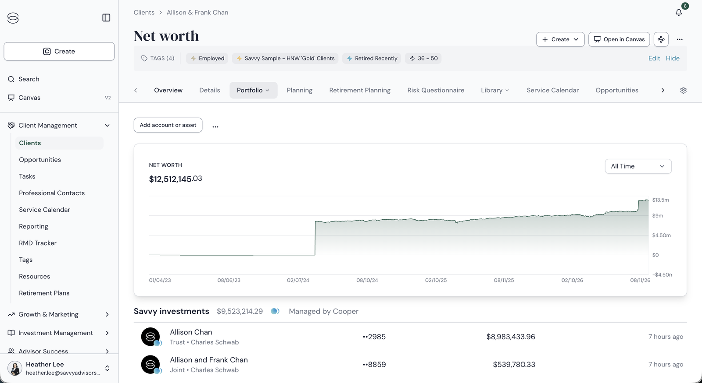
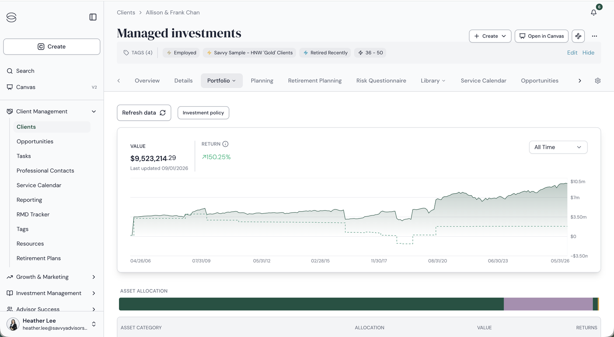
The same household, split across two pages. Net worth lists accounts by a masked number and custodian; Managed investments doesn't list accounts at all until you dig into a sub-tab. The redesign keeps both totals — it puts them on one page.
Deep on data, empty on action
Drill in and the detail is real: asset classes, positions, tax lots with cost basis and gain/loss type, a full transaction ledger. But none of it connects to an action. Trades and money movement did exist in Savvy, as tasks — but a task went to the ops team, who executed it by hand at the custodian, so every request carried a delay. Most advisors made the same calculation: skip the task, log into the custodian, and do it themselves. And nothing on the page ever suggested a model recommendation at all.
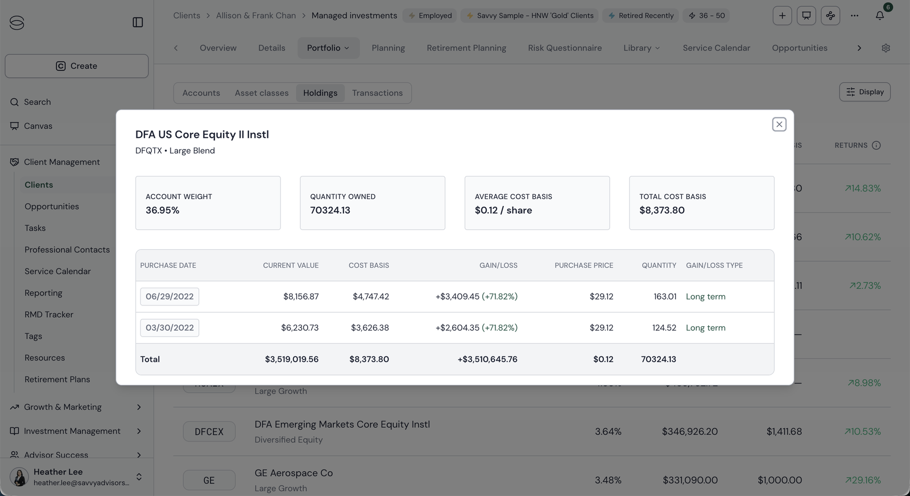
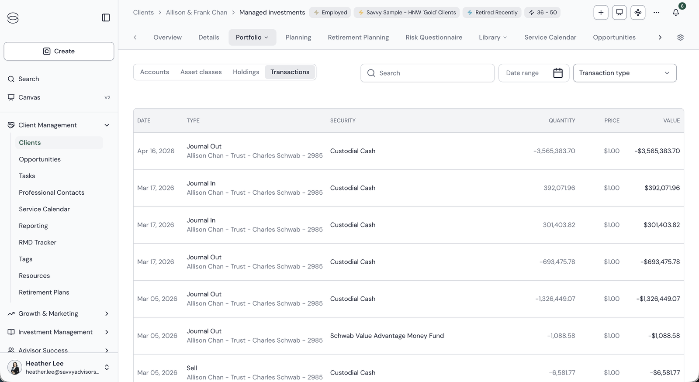
The holdings modal has everything an advisor would want to know before acting, and no way to act from it. In Transactions, the only handle on an account is a custodian name and the last four digits.
How might we redesign the household portfolio view for faster review, surface account-level detail for findability beyond strategy and account number, and proactively recommend Savvy managed models that advisors can act on — with a transition analysis, an investment proposal, or both?
— Problem statementPulling a competing OKR into scope
The brief was an ECI project: get the portfolio ready for accounts held at Savvy through Fidelity NFS. But the company had a second, separate OKR that the same page could move — SWIM enrollment — and it was being tracked by a different team with no design attached. I scoped it in.
SWIM — Savvy Wealth Investment Management — is Savvy's in-house program where an advisor enrolls a client account into a managed strategy for a fee. Internally it's the primary revenue lever for the investment business. ECI moves assets onto Savvy's custody; SWIM monetizes them once they're there. Both OKRs come down to the same question an advisor asks while looking at a household: what should I do with this account? The portfolio page is the only place both answers can live.
The case for pulling SWIM in was sitting in the old product. Its biggest blocker wasn't the strategies — it was that advisors had no reason to enroll from the page where they saw the money. Unmanaged accounts sat in plain sight with nothing pointing at them.
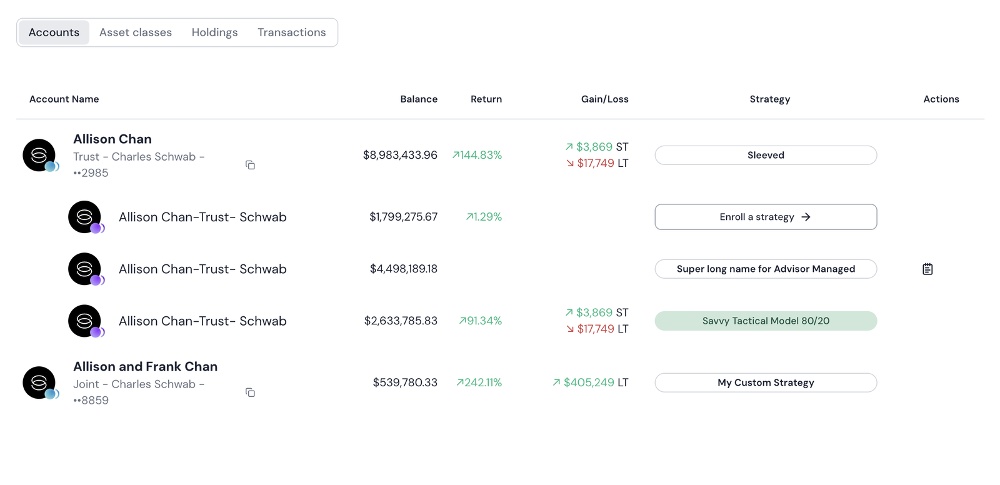
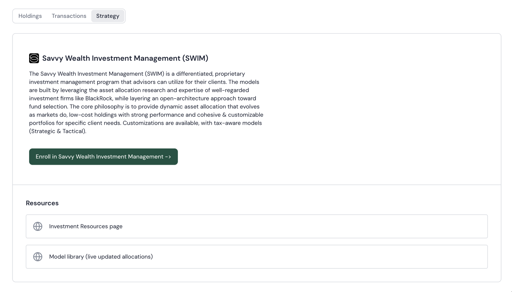
The old enrollment paths. On the left, "Enroll a strategy" is styled like every other strategy name in the column. On the right, a marketing paragraph and one button — no account, no reason, no recommended model. This is the entry point to Savvy's biggest revenue driver.
The ECI × SWIM quadrant
The two OKRs become two questions about every account: is Savvy the custodian? (ECI) and is it on a managed model? (SWIM). Put them on a grid and each account's position tells you its primary action. The advisor never has to hold the rules in their head — the page does.
Custody sets the data and how trades happen. Model status sets whether there's anything to recommend. Top right is the cell that makes money: live accounts with no model yet.
Two things the model had to handle
Sleeves
One account can hold several strategies at different percentages. The Chan Family Trust splits into a Core sleeve on a 60/40 model and a Self-directed sleeve that's unmanaged — so the account is both managed and a SWIM candidate. Each sleeve gets its own strategy, holdings, and cost basis; the account is the roll-up.
Scope
The whole page can be scoped to any subset of accounts, or to a preset — All, Taxable, Retirement. One account drills in; a subset shows a scoped roll-up. Same rules, applied to whatever the advisor is looking at.
The Chan household fixture deliberately seeds one account in each quadrant, so every path in the design is demonstrable rather than hypothetical.
One page that already knows what each account is and what to do with it
The three old pages — Net worth, Managed investments, and Strategy — become one Portfolio page with four views: Portfolio, Net worth, Positions, and All Transactions. Each account row knows its own custody and model status, so it shows live or delayed data accordingly and offers the action that applies to it: trade directly, route through Ops, or recommend a model.
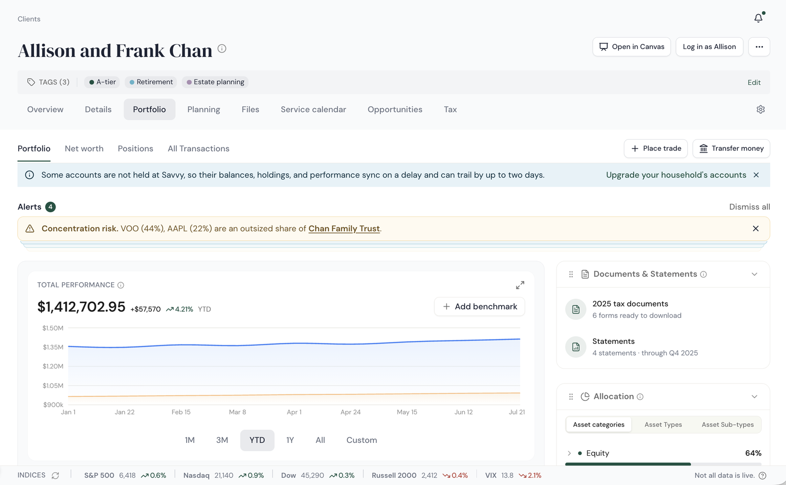
Everything a household holds, one level deep
The three old pages become one Portfolio with a shallow secondary nav — Portfolio, Net worth, Positions, All Transactions. Place trade and Transfer money live in the header on every view. A delayed-data ribbon flags households with accounts held elsewhere, and a risk-alert deck surfaces concentration and drift before the advisor scrolls.
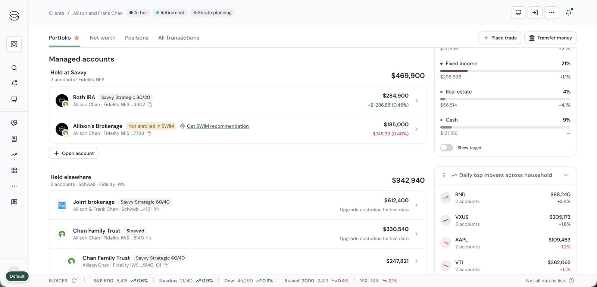
A household halfway through the ECI transition
This is a split household: some accounts have moved onto ECI, some haven't yet. Held at Savvy is the ECI group — Fidelity NFS, live data, day change on every row. Held elsewhere is the non-ECI group, still at Schwab or Fidelity IWS on delayed data, and each row says "Upgrade custodian for live data" where the day change would be. The page has to work in this in-between state, because most households will live here for a while during the transition.
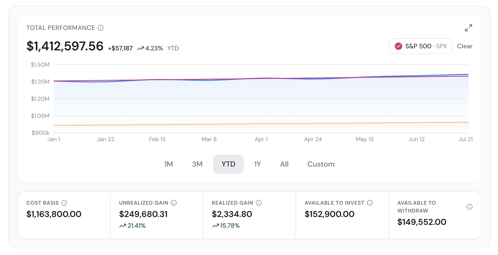
Performance you can benchmark, on numbers that are current
Total performance streams for accounts held at Savvy, with intraday 1D and 5D ranges that only ECI accounts can offer. Advisors add any benchmark — S&P 500, Nasdaq, MSCI, Agg Bond — or blend several into a weighted composite. The stat row underneath answers the questions that used to need a custodian login: cost basis, unrealized and realized gain, available to invest, available to withdraw.
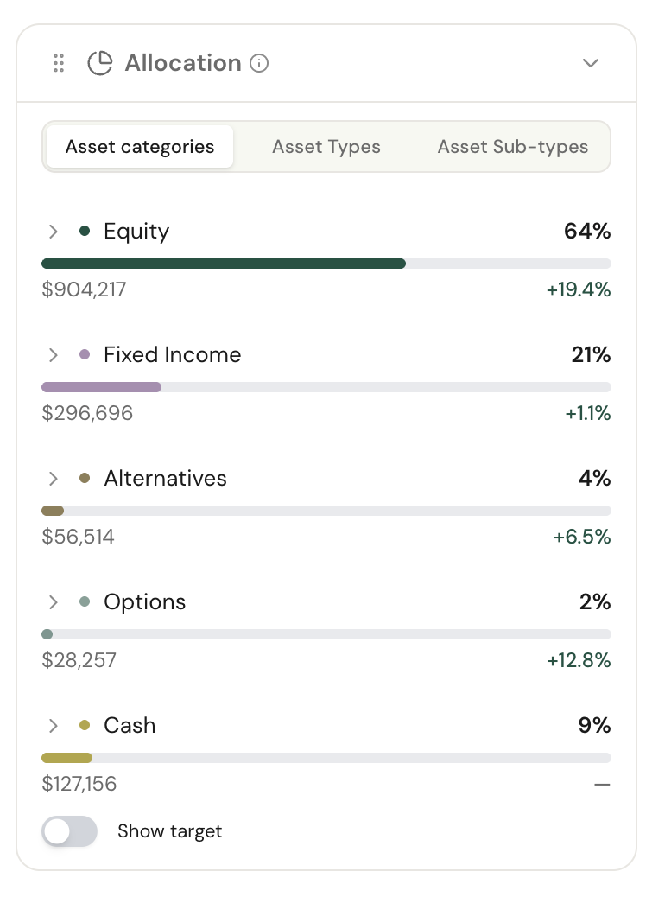
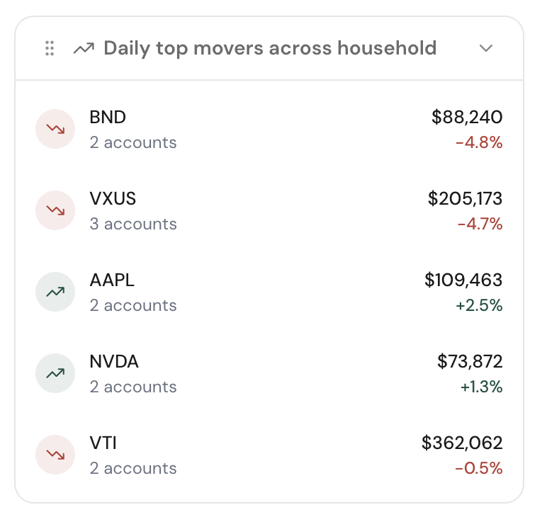
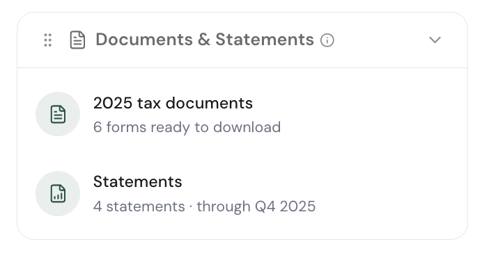
A customizable rail of things worth glancing at
Allocation by category, type, or sub-type with a show-target toggle. Daily top movers across the household, which only exists because the data is live. Tax documents and statements delivered inside Savvy through Fidelity's document APIs instead of a custodian portal. Advisors reorder or hide widgets to fit how they review.
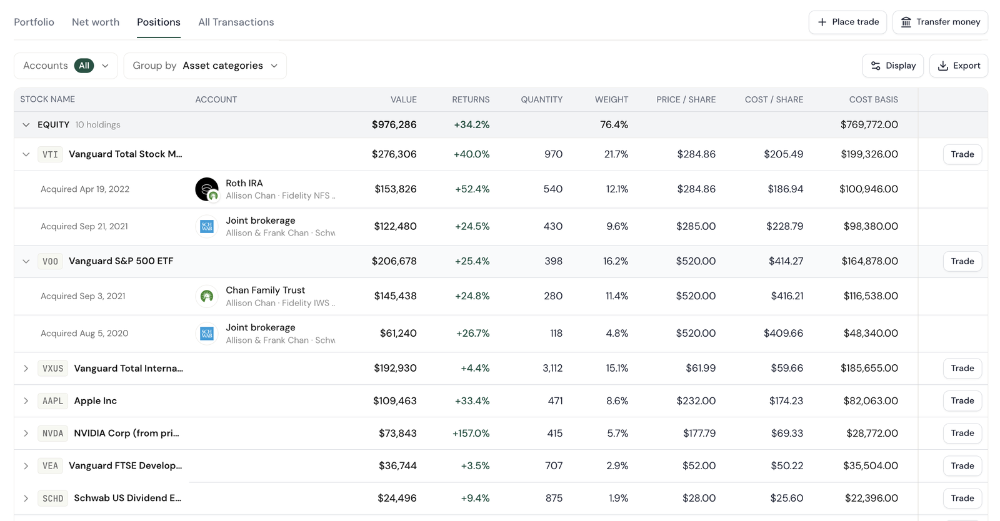
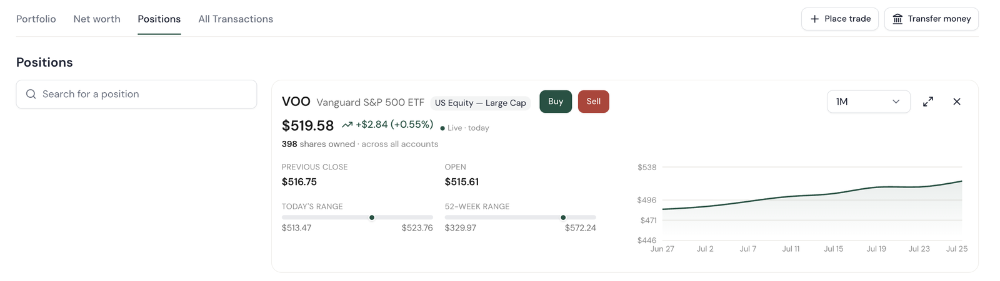
Every holding, across every account, with the action on the row
Positions consolidate across accounts and group by asset category, account, or class. Expand a ticker to see each account's lot with its own acquired date, quantity, cost, and return. A Trade button sits on every row. Click a position and it opens with a live quote, today's and 52-week ranges, and Buy and Sell one tap away.
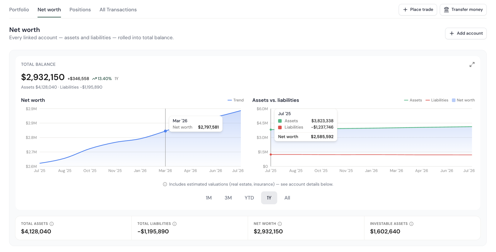
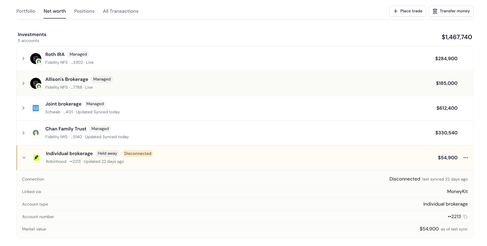
Assets and liabilities, with the state of every connection
Net worth is its own view with its own total. It splits assets from liabilities, charts the trend, and breaks out what's actually investable. Every linked account shows whether it's still connected. The Robinhood account here is flagged Disconnected and dated to its last sync, so nobody reads a three-week-old balance as today's. Properties expand to show what's behind the estimate: purchase price, appreciation, mortgage, equity.
- Held-away and estimated values carry an "as of last sync" or "est." note
- Real-estate metadata — type, size, purchase, appreciation, equity — is structured so it can feed financial planning later
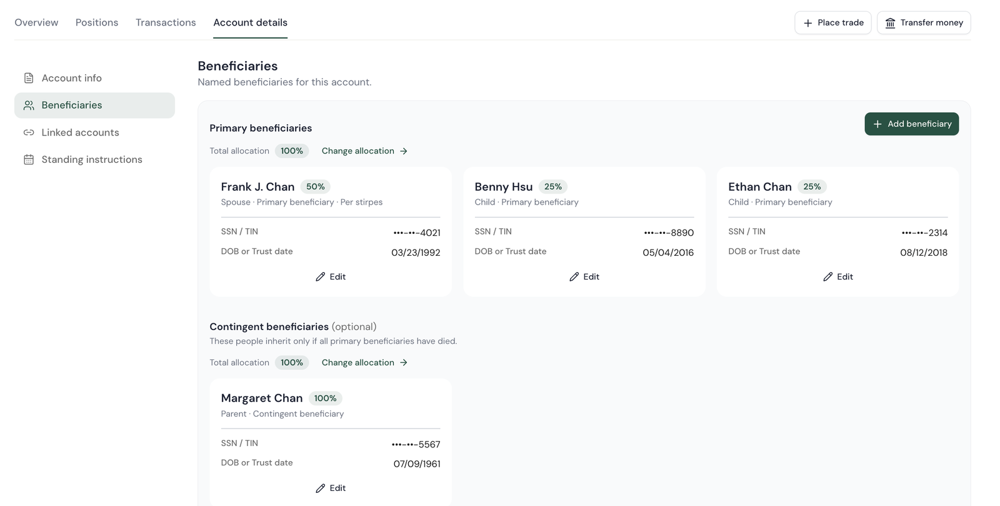
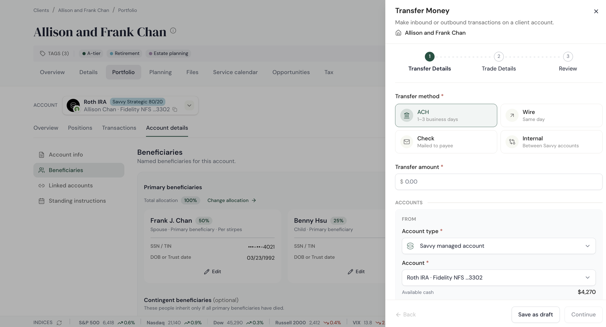
Fees, beneficiaries, and money movement, done from the account
Drill into an account held at Savvy and the details are editable in place: fee schedule, beneficiaries with allocation, linked accounts, standing instructions. Transfer money is a three-step sheet — ACH, wire, check, or internal — with an optional trade step before review. For accounts held elsewhere the same fields are read-only and the same button opens an Ops task instead, so the advisor never has to know which rule applies.
Four steps from "unmanaged" to enrolled, without leaving the page
This is the competing OKR, designed into the page. An unmanaged account held at Savvy gets a recommendation, a reason, a proposal, and an enrollment — each one click from the last.
The row itself says "not enrolled"
An unmanaged account carries a "Not enrolled in SWIM" chip and a "Get SWIM recommendation" link in the row, next to the enrolled accounts that show their strategy. The gap is visible at a glance, in the same list the advisor is already reading.
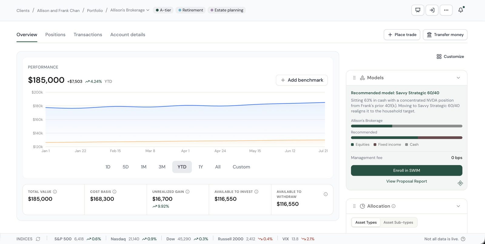
A named model, and the reason for it
The account overview carries a Models widget that names a specific model — Savvy Strategic 60/40 — and says why: sitting 63% in cash with a concentrated NVDA position from a prior 401(k). Current versus recommended allocation sits under it, with the fee, Enroll in SWIM, and View Proposal Report.
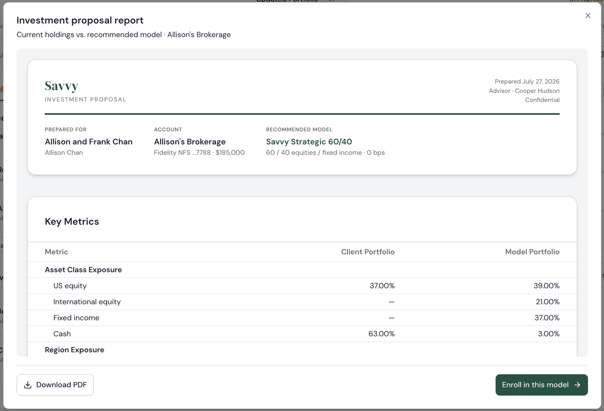
A client-ready report, generated from the row
View Proposal Report opens a branded investment proposal: household, account, recommended model, then client portfolio versus model across asset class, region, and key metrics. It downloads as a PDF for the client meeting, and Enroll in this model is on the same screen.
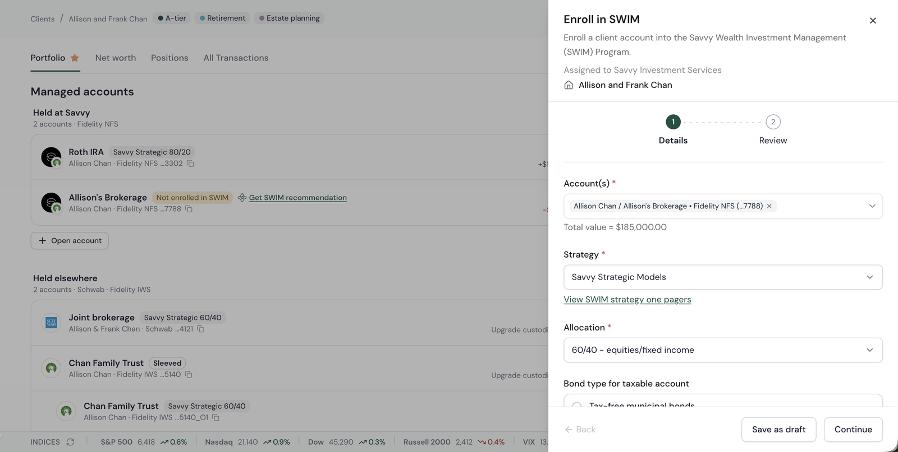
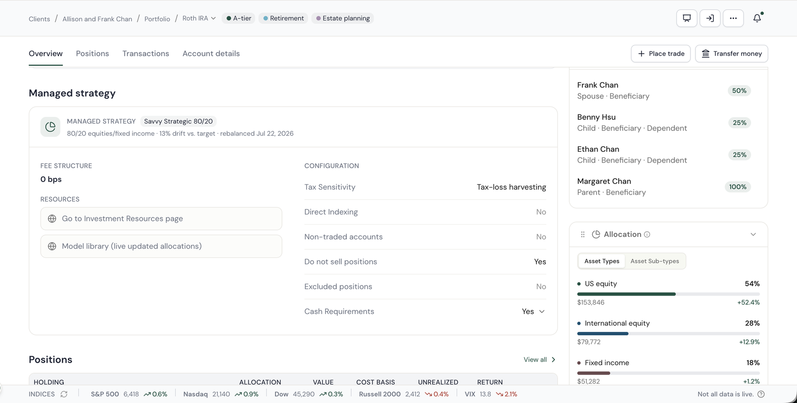
Enroll with the account and model already filled in
Enroll in SWIM opens a docked sheet with the account preselected and the strategy and allocation carried over from the recommendation. Two steps, details and review, then it routes to Savvy Investment Services. Once enrolled, the account overview shows the managed strategy, drift versus target, last rebalance, fee, and configuration in one card.
Shipped in July, and the advisors followed
A walk through the shipped experience — the Chan household from landing page to account detail, on live data.
ECI launched
Savvy goes live as an introducing broker-dealer clearing through Fidelity NFS. First accounts open on the new custody.
Portfolio redesign launched
The single Portfolio page replaces Net worth, Managed investments, and Strategy for every household on the platform.